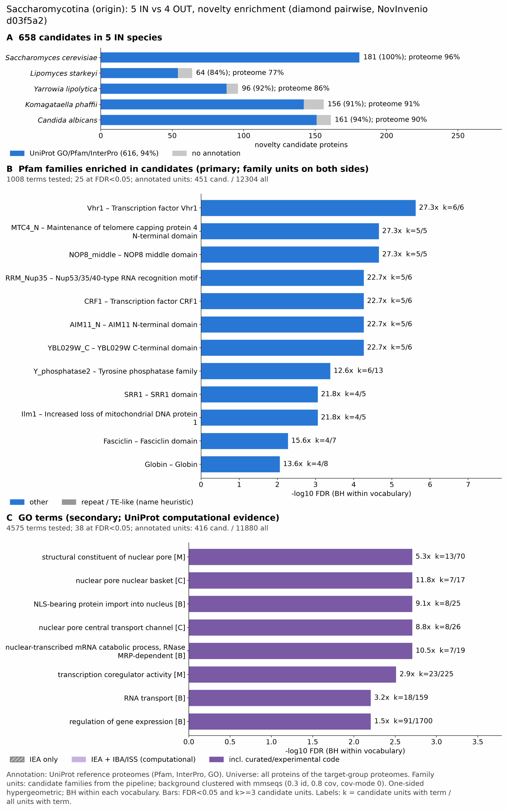

yc saccharomycotina: functional enrichment (novelty)
One-sided hypergeometric test per term; Benjamini-Hochberg FDR within each scope, level and vocabulary. Candidates are the novelty candidates: gene families present in the IN group and absent from the OUT group. Universe: proteome. Background clustered: True (31107 sequences in 16752 clusters, mmseqs easy-cluster --min-seq-id 0.3 -c 0.8). Family level: one unit per candidate family and per background cluster.
Sources: Pfam: 2026-01-27-Pfam38.2; InterPro entries: 110.0; GO: releases/2026-07-26; analysis generated 2026-10-24T14:26:17. Source tables: /bigdata/stajichlab/jstajich/projects/NovInvenio_Investigations/studies/fungi/yeast_convergence/yc_saccharomycotina/analysis/enrichment/outputs/proteome_clustered.
Full record: PROVENANCE. Run report: report.html.
- Annotation provenance is not fully recorded: PROVENANCE.yaml lists the per-species annotation files and their checksums, but not the UniProt release they come from.
- GO results are secondary. GO annotations include computational evidence (IEA, IBA); the GO evidence column shows if a term has non-IEA support.
- Candidate families (pipeline clustering of candidates) and background clusters (mmseqs clustering of the background proteome) are made by different runs, so family-level counts are not fully comparable.
Summary figure

Annotation coverage
Fraction of proteins with at least one term per vocabulary. Universe = all proteins of the species; candidates = the candidate set.
| Species | Set | Proteins | Pfam | Pfam clan | InterPro | GO | Any |
|---|---|---|---|---|---|---|---|
| Scer | universe | 6066 | 88.6% | 66.3% | 90.9% | 94.8% | 96.4% |
| Scer | candidates | 181 | 90.6% | 53.0% | 97.8% | 98.9% | 100.0% |
| Lipostar | universe | 8135 | 73.2% | 59.2% | 77.0% | 66.6% | 77.3% |
| Lipostar | candidates | 64 | 79.7% | 48.4% | 82.8% | 62.5% | 84.4% |
| Ylip | universe | 6449 | 81.3% | 64.8% | 85.6% | 77.8% | 86.1% |
| Ylip | candidates | 96 | 83.3% | 46.9% | 89.6% | 65.6% | 91.7% |
| Komaphaf | universe | 5075 | 87.7% | 68.1% | 90.6% | 82.5% | 90.9% |
| Komaphaf | candidates | 156 | 85.9% | 45.5% | 89.7% | 66.7% | 91.0% |
| Candalbi | universe | 6040 | 84.2% | 65.5% | 88.1% | 82.9% | 90.2% |
| Candalbi | candidates | 161 | 83.2% | 45.3% | 91.9% | 77.0% | 93.8% |
| ALL_IN | universe | 31765 | 82.2% | 64.3% | 85.7% | 79.9% | 87.4% |
| ALL_IN | candidates | 658 | 85.6% | 48.0% | 91.8% | 77.5% | 93.6% |
Tests summary
Per vocabulary: terms with FDR < 0.05 / terms tested. Protein level counts proteins; family level counts candidate families and background clusters.
| Scope | Level | Cand. units | Pfam sig / tested | Pfam clan sig / tested | InterPro sig / tested | GO sig / tested |
|---|---|---|---|---|---|---|
| whole_set | family | 527 | 25 / 1008 | 7 / 311 | 38 / 2017 | 38 / 4575 |
| whole_set | protein | 658 | 64 / 3241 | 23 / 449 | 102 / 7060 | 102 / 6626 |
| Candalbi | family | 160 | 0 / 164 | 0 / 183 | 0 / 482 | 0 / 2832 |
| Candalbi | protein | 161 | 0 / 249 | 0 / 204 | 0 / 672 | 0 / 2967 |
| Komaphaf | family | 156 | 0 / 136 | 0 / 171 | 0 / 424 | 0 / 2421 |
| Komaphaf | protein | 156 | 0 / 181 | 0 / 186 | 0 / 530 | 0 / 2522 |
| Lipostar | family | 63 | 0 / 222 | 0 / 202 | 0 / 592 | 0 / 2545 |
| Lipostar | protein | 64 | 0 / 299 | 0 / 212 | 0 / 757 | 0 / 2650 |
| Scer | family | 175 | 0 / 167 | 1 / 175 | 0 / 486 | 0 / 3447 |
| Scer | protein | 181 | 0 / 269 | 1 / 200 | 0 / 711 | 0 / 3712 |
| Ylip | family | 96 | 0 / 174 | 0 / 184 | 0 / 502 | 0 / 2539 |
| Ylip | protein | 96 | 0 / 253 | 0 / 199 | 0 / 685 | 0 / 2674 |
Top 25 Pfam terms (whole set, family level)
25 rows shown, ordered by FDR then p-value; 25 have FDR < 0.05 (bold).
| Term | Name | k / N cand. | n / M bg | Fold | FDR (BH) |
|---|---|---|---|---|---|
| PF04001 | Vhr1: Transcription factor Vhr1 | 6 / 451 | 6 / 12304 | 27.282 | 2.37e-06 |
| PF28296 | MTC4_N: Maintenance of telomere capping protein 4 N-terminal domain | 5 / 451 | 5 / 12304 | 27.282 | 2.18e-05 |
| PF29020 | NOP8_middle: NOP8 middle domain | 5 / 451 | 5 / 12304 | 27.282 | 2.18e-05 |
| PF05172 | RRM_Nup35: Nup53/35/40-type RNA recognition motif | 5 / 451 | 6 / 12304 | 22.735 | 5.43e-05 |
| PF10380 | CRF1: Transcription factor CRF1 | 5 / 451 | 6 / 12304 | 22.735 | 5.43e-05 |
| PF28272 | AIM11_N: AIM11 N-terminal domain | 5 / 451 | 6 / 12304 | 22.735 | 5.43e-05 |
| PF29033 | YBL029W_C: YBL029W C-terminal domain | 5 / 451 | 6 / 12304 | 22.735 | 5.43e-05 |
| PF03162 | Y_phosphatase2: Tyrosine phosphatase family | 6 / 451 | 13 / 12304 | 12.592 | 4.07e-04 |
| PF07985 | SRR1: SRR1 domain | 4 / 451 | 5 / 12304 | 21.825 | 8.72e-04 |
| PF10311 | Ilm1: Increased loss of mitochondrial DNA protein 1 | 4 / 451 | 5 / 12304 | 21.825 | 8.72e-04 |
| PF02469 | Fasciclin: Fasciclin domain | 4 / 451 | 7 / 12304 | 15.589 | 0.005 |
| PF00042 | Globin: Globin | 4 / 451 | 8 / 12304 | 13.641 | 0.009 |
| PF17235 | STD1: STD1/MTH1 | 4 / 451 | 8 / 12304 | 13.641 | 0.009 |
| PF13430 | DUF4112: Domain of unknown function (DUF4112) | 4 / 451 | 9 / 12304 | 12.125 | 0.014 |
| PF05236 | TAF4: Transcription initiation factor TFIID component TAF4 family | 3 / 451 | 5 / 12304 | 16.369 | 0.019 |
| PF05397 | Med15_fungi: Mediator complex subunit 15 | 3 / 451 | 5 / 12304 | 16.369 | 0.019 |
| PF06058 | DCP1: Dcp1-like decapping family | 3 / 451 | 5 / 12304 | 16.369 | 0.019 |
| PF08167 | RIX1: rRNA processing/ribosome biogenesis | 3 / 451 | 5 / 12304 | 16.369 | 0.019 |
| PF08209 | Sgf11: Sgf11 (transcriptional regulation protein) | 3 / 451 | 5 / 12304 | 16.369 | 0.019 |
| PF09496 | CENP-O: Cenp-O kinetochore centromere component | 3 / 451 | 5 / 12304 | 16.369 | 0.019 |
| PF09724 | Dcc1: Sister chromatid cohesion protein Dcc1 | 3 / 451 | 5 / 12304 | 16.369 | 0.019 |
| PF16987 | KIX_2: KIX domain | 3 / 451 | 5 / 12304 | 16.369 | 0.019 |
| PF20945 | RMP1: Ribonuclease MRP protein subunit RMP1 | 3 / 451 | 5 / 12304 | 16.369 | 0.019 |
| PF29037 | DSE1_N: DSE1 N-terminal domain | 3 / 451 | 5 / 12304 | 16.369 | 0.019 |
| PF05730 | CFEM: CFEM domain | 4 / 451 | 11 / 12304 | 9.921 | 0.019 |
Top 25 InterPro terms (whole set, family level)
25 rows shown, ordered by FDR then p-value; 25 have FDR < 0.05 (bold).
| Term | Name | k / N cand. | n / M bg | Fold | FDR (BH) |
|---|---|---|---|---|---|
| IPR007147 | Family:Transcription factor Vhr | 6 / 485 | 6 / 13112 | 27.035 | 5.01e-06 |
| IPR038769 | Family:Maintenance of telomere capping protein 4 | 5 / 485 | 5 / 13112 | 27.035 | 3.42e-05 |
| IPR060164 | Domain:Maintenance of telomere capping protein 4, N-terminal domain | 5 / 485 | 5 / 13112 | 27.035 | 3.42e-05 |
| IPR062356 | Domain:NOP8, middle domain | 5 / 485 | 5 / 13112 | 27.035 | 3.42e-05 |
| IPR007846 | Domain:RNA-recognition motif (RRM) Nup35-type domain | 5 / 485 | 6 / 13112 | 22.529 | 8.85e-05 |
| IPR018837 | Family:Transcription factor CRF1/IFH1 | 5 / 485 | 6 / 13112 | 22.529 | 8.85e-05 |
| IPR038814 | Family:Altered inheritance of mitochondria protein 11 | 5 / 485 | 6 / 13112 | 22.529 | 8.85e-05 |
| IPR051643 | Family:Transcriptional Regulators with Zinc Finger Domains | 5 / 485 | 6 / 13112 | 22.529 | 8.85e-05 |
| IPR062361 | Domain:YBL029W, C-terminal domain | 5 / 485 | 6 / 13112 | 22.529 | 8.85e-05 |
| IPR004861 | Family:Atypical dual-specificity phosphatase Siw14-like | 6 / 485 | 13 / 13112 | 12.478 | 6.89e-04 |
| IPR012942 | Domain:SRR1-like domain | 4 / 485 | 5 / 13112 | 21.628 | 0.001 |
| IPR018815 | Family:Increased loss of mitochondrial DNA protein 1 | 4 / 485 | 5 / 13112 | 21.628 | 0.001 |
| IPR040044 | Family:SRR1-like protein | 4 / 485 | 5 / 13112 | 21.628 | 0.001 |
| IPR044399 | Domain:Myoglobin-like, M family globin domain | 4 / 485 | 6 / 13112 | 18.023 | 0.004 |
| IPR000782 | Domain:FAS1 domain | 4 / 485 | 7 / 13112 | 15.449 | 0.007 |
| IPR036378 | Homologous_superfamily:FAS1 domain superfamily | 4 / 485 | 7 / 13112 | 15.449 | 0.007 |
| IPR035189 | Family:Std1/Mth1 | 4 / 485 | 8 / 13112 | 13.518 | 0.014 |
| IPR000971 | Domain:Globin | 4 / 485 | 9 / 13112 | 12.016 | 0.019 |
| IPR012292 | Homologous_superfamily:Globin/Protoglobin | 4 / 485 | 9 / 13112 | 12.016 | 0.019 |
| IPR025187 | Family:Protein of unknown function DUF4112 | 4 / 485 | 9 / 13112 | 12.016 | 0.019 |
| IPR051645 | Family:PER33/POM33 transmembrane regulator | 4 / 485 | 9 / 13112 | 12.016 | 0.019 |
| IPR009050 | Homologous_superfamily:Globin-like superfamily | 4 / 485 | 10 / 13112 | 10.814 | 0.027 |
| IPR007900 | Domain:Transcription initiation factor TFIID component TAF4, C-terminal | 3 / 485 | 5 / 13112 | 16.221 | 0.027 |
| IPR008626 | Family:Mediator complex, subunit Med15, fungi | 3 / 485 | 5 / 13112 | 16.221 | 0.027 |
| IPR010334 | Family:mRNA-decapping enzyme subunit 1 | 3 / 485 | 5 / 13112 | 16.221 | 0.027 |
Top 15 GO terms (whole set, family level) — secondary, computational evidence (IEA/IBA) included
15 rows shown, ordered by FDR then p-value; 15 have FDR < 0.05 (bold).
| Term | Name | k / N cand. | n / M bg | Fold | FDR (BH) | GO evidence | Families with non-IEA |
|---|---|---|---|---|---|---|---|
| GO:0017056 | molecular_function:structural constituent of nuclear pore | 13 / 416 | 70 / 11880 | 5.304 | 0.002 | has_non_IEA | 11 |
| GO:0044615 | cellular_component:nuclear pore nuclear basket | 7 / 416 | 17 / 11880 | 11.759 | 0.002 | has_non_IEA | 4 |
| GO:0006607 | biological_process:NLS-bearing protein import into nucleus | 8 / 416 | 25 / 11880 | 9.138 | 0.002 | has_non_IEA | 6 |
| GO:0044613 | cellular_component:nuclear pore central transport channel | 8 / 416 | 26 / 11880 | 8.787 | 0.002 | has_non_IEA | 5 |
| GO:0000294 | biological_process:nuclear-transcribed mRNA catabolic process, RNase MRP-dependent | 7 / 416 | 19 / 11880 | 10.521 | 0.002 | has_non_IEA | 5 |
| GO:0003712 | molecular_function:transcription coregulator activity | 23 / 416 | 225 / 11880 | 2.919 | 0.003 | has_non_IEA | 13 |
| GO:0050658 | biological_process:RNA transport | 18 / 416 | 159 / 11880 | 3.233 | 0.006 | has_non_IEA | 9 |
| GO:0051236 | biological_process:establishment of RNA localization | 18 / 416 | 159 / 11880 | 3.233 | 0.006 | has_non_IEA | 9 |
| GO:0050657 | biological_process:nucleic acid transport | 18 / 416 | 160 / 11880 | 3.213 | 0.006 | has_non_IEA | 9 |
| GO:0010468 | biological_process:regulation of gene expression | 91 / 416 | 1700 / 11880 | 1.529 | 0.006 | has_non_IEA | 70 |
| GO:0060962 | biological_process:regulation of ribosomal protein gene transcription by RNA polymerase II | 8 / 416 | 34 / 11880 | 6.719 | 0.006 | has_non_IEA | 2 |
| GO:0006355 | biological_process:regulation of DNA-templated transcription | 69 / 416 | 1192 / 11880 | 1.653 | 0.006 | has_non_IEA | 51 |
| GO:2001141 | biological_process:regulation of RNA biosynthetic process | 69 / 416 | 1193 / 11880 | 1.652 | 0.006 | has_non_IEA | 51 |
| GO:0036396 | cellular_component:RNA N6-methyladenosine methyltransferase complex | 4 / 416 | 6 / 11880 | 19.038 | 0.007 | has_non_IEA | 4 |
| GO:0051252 | biological_process:regulation of RNA metabolic process | 72 / 416 | 1286 / 11880 | 1.599 | 0.010 | has_non_IEA | 53 |
Actin cytoskeleton controls
Known actin-related families and how many of their proteins pass each filter. Protein ID columns are left out.
| control | pfam_ids | desc_regex | IN_universe | IN_in_matrix | IN_pass_ingroup_rule | candidates | near_miss_out1 | near_miss_out2 | n_Scer | n_Lipostar | n_Ylip | n_Komaphaf | n_Candalbi | n_Amega | n_Tubemela | n_Ncra | n_Anid |
|---|---|---|---|---|---|---|---|---|---|---|---|---|---|---|---|---|---|
| Arp2/3 ARPC2 (P34-Arc) | PF04045 | 5 | 5 | 5 | 0 | 0 | 0 | 1 | 1 | 1 | 1 | 1 | 1 | 1 | 1 | 1 | |
| Arp2/3 ARPC3 (P21-Arc) | PF04062 | 5 | 5 | 5 | 0 | 0 | 0 | 1 | 1 | 1 | 1 | 1 | 1 | 1 | 1 | 1 | |
| Arp2/3 ARPC4 | PF05856 | 5 | 5 | 5 | 0 | 0 | 0 | 1 | 1 | 1 | 1 | 1 | 1 | 1 | 1 | 1 | |
| Arp2/3 ARPC5 (P16-Arc) | PF04699 | 5 | 5 | 5 | 0 | 0 | 0 | 1 | 1 | 1 | 1 | 1 | 1 | 1 | 1 | 1 | |
| Arp2/3 ARPC1 (description only) | arp2/3 complex.*(41|p41|subunit 1)|ARPC1 | 0 | 0 | 0 | 0 | 0 | 0 | 0 | 0 | 0 | 0 | 0 | 0 | 1 | 0 | 0 | |
| Arp2 / Arp3 (description only) | actin-related protein (2|3)\b|\bARP[23]\b | 35 | 35 | 35 | 0 | 0 | 0 | 7 | 7 | 6 | 8 | 7 | 7 | 5 | 6 | 7 | |
| WAVE complex NCKAP1 | PF09735 | 0 | 0 | 0 | 0 | 0 | 0 | 0 | 0 | 0 | 0 | 0 | 0 | 0 | 0 | 0 | |
| WAVE complex CYFIP (FragX_IP) | PF05994 | 0 | 0 | 0 | 0 | 0 | 0 | 0 | 0 | 0 | 0 | 0 | 0 | 0 | 0 | 0 | |
| WAVE complex ABI | PF07815|PF27594 | 0 | 0 | 0 | 0 | 0 | 0 | 0 | 0 | 0 | 0 | 0 | 0 | 0 | 0 | 0 | |
| SCAR/WAVE (SCAR_helical) | PF27569 | 0 | 0 | 0 | 0 | 0 | 0 | 0 | 0 | 0 | 0 | 0 | 0 | 0 | 0 | 0 | |
| WASP family (WH1) | PF00568 | 5 | 5 | 5 | 0 | 0 | 0 | 1 | 1 | 1 | 1 | 1 | 2 | 1 | 1 | 1 | |
| WH2 motif (WASP, WAVE, others) | PF02205 | 10 | 10 | 10 | 0 | 0 | 1 | 2 | 2 | 2 | 2 | 2 | 2 | 2 | 1 | 3 | |
| Formin FH2 | PF02181 | 8 | 8 | 8 | 0 | 0 | 0 | 2 | 1 | 1 | 2 | 2 | 1 | 1 | 1 | 1 | |
| Formin Drf_GBD / Drf_FH3 / Drf_DAD | PF06371|PF06367|PF06345 | 8 | 8 | 7 | 0 | 0 | 0 | 1 | 2 | 1 | 2 | 2 | 1 | 2 | 2 | 2 | |
| Ena/VASP (VASP_tetra) | PF08776 | 0 | 0 | 0 | 0 | 0 | 0 | 0 | 0 | 0 | 0 | 0 | 0 | 0 | 0 | 0 | |
| Coronin (description only) | coronin | 5 | 5 | 5 | 0 | 0 | 0 | 1 | 1 | 1 | 1 | 1 | 1 | 1 | 1 | 1 | |
| Cortactin (HS1_rep) | PF02218 | 0 | 0 | 0 | 0 | 0 | 0 | 0 | 0 | 0 | 0 | 0 | 0 | 0 | 0 | 0 | |
| Myosin 2 tail (Myosin_tail_1) | PF01576 | 0 | 0 | 0 | 0 | 0 | 0 | 0 | 0 | 0 | 0 | 0 | 1 | 0 | 0 | 0 | |
| Myosin head (all myosins) | PF00063 | 19 | 19 | 19 | 0 | 0 | 0 | 5 | 4 | 4 | 3 | 3 | 4 | 5 | 4 | 5 |
Page written by bin/generate_enrichment_page.py.